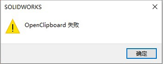

OpenClipboard失败
装配体插入零部件时提示：OpenClipboard 失败,(测试文本)

当我将组件插入装配体时，为什么会看到”OpenClipboard Failed”错误?
方法1（带测试）软件冲突
据说和电脑其他程序冲突有关系。不过该提示关闭它即可，不影响软件使用
方法2（带测试）
此消息通常表示计算机上缺乏资源。请查阅以下资料:
1. 确保%temp%文件夹中有足够的空闲空间。
2. 确保%temp%文件夹具有适当的权限。
3. 请确保系统驱动器有足够的空闲磁盘空间。
此外，重新启动计算机也可能有助于解决此问题。
为什么从设计库插入零件时出现”OpenClipboard Failed”错误?
此错误通常表明存在资源问题。尝试以下方法来解决这个问题:
1. 收到错误后，重新启动计算机。
2. 确认有足够的可用硬盘空间。
3. 删除%temp%位置中的文件。